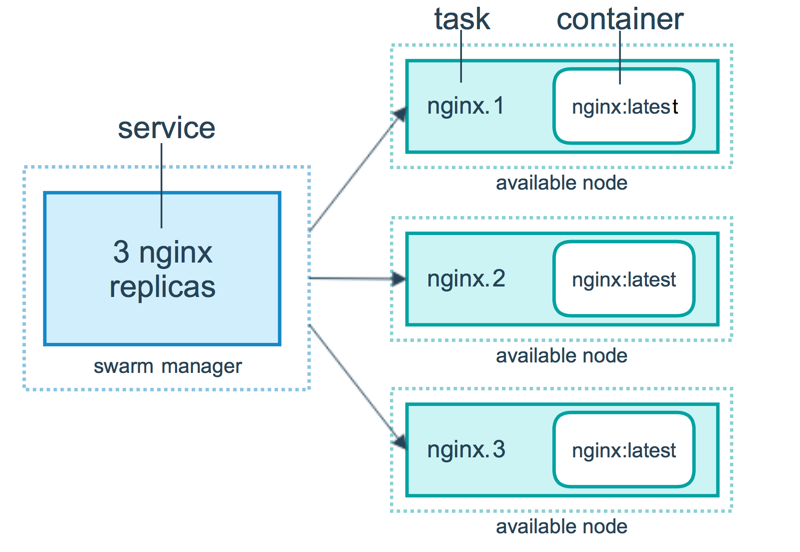
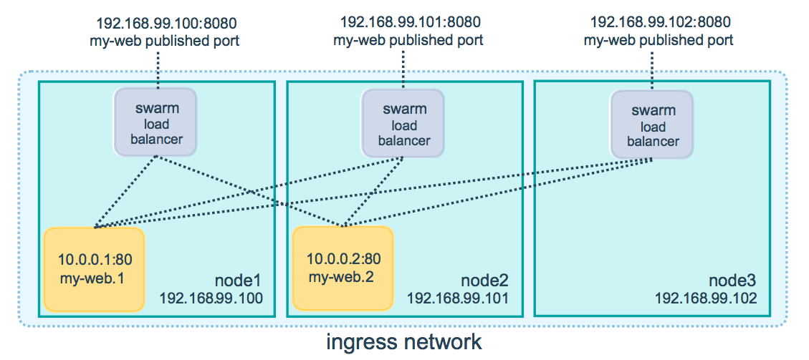

<!DOCTYPE HTML>
<html lang="" >
    <head>
        <meta charset="UTF-8">
        <meta content="text/html; charset=utf-8" http-equiv="Content-Type">
        <title>docker swarm · GitBook</title>
        <meta http-equiv="X-UA-Compatible" content="IE=edge" />
        <meta name="description" content="">
        <meta name="generator" content="GitBook 3.2.3">
        
        
        
    
    <link rel="stylesheet" href="../gitbook/style.css">

    
            
                
                <link rel="stylesheet" href="../gitbook/gitbook-plugin-page-toc/page-toc.css">
                
            
                
                <link rel="stylesheet" href="../gitbook/gitbook-plugin-highlight/website.css">
                
            
                
                <link rel="stylesheet" href="../gitbook/gitbook-plugin-search/search.css">
                
            
                
                <link rel="stylesheet" href="../gitbook/gitbook-plugin-fontsettings/website.css">
                
            
        

    

    
        
    
        
    
        
    
        
    
        
    
        
    

        
    
    
    <meta name="HandheldFriendly" content="true"/>
    <meta name="viewport" content="width=device-width, initial-scale=1, user-scalable=no">
    <meta name="apple-mobile-web-app-capable" content="yes">
    <meta name="apple-mobile-web-app-status-bar-style" content="black">
    <link rel="apple-touch-icon-precomposed" sizes="152x152" href="../gitbook/images/apple-touch-icon-precomposed-152.png">
    <link rel="shortcut icon" href="../gitbook/images/favicon.ico" type="image/x-icon">

    
    <link rel="next" href="dockerfile.html" />
    
    
    <link rel="prev" href="docker-basis.html" />
    

    </head>
    <body>
        
<div class="book">
    <div class="book-summary">
        
            
<div id="book-search-input" role="search">
    <input type="text" placeholder="Type to search" />
</div>

            
                <nav role="navigation">
                


<ul class="summary">
    
    

    

    
        
        
    
        <li class="chapter " data-level="1.1" data-path="../">
            
                <a href="../">
            
                    
                    Introduction
            
                </a>
            

            
        </li>
    
        <li class="chapter " data-level="1.2" data-path="../linux/">
            
                <a href="../linux/">
            
                    
                    Linux
            
                </a>
            

            
            <ul class="articles">
                
    
        <li class="chapter " data-level="1.2.1" data-path="../linux/linux-basis.html">
            
                <a href="../linux/linux-basis.html">
            
                    
                    linux basis
            
                </a>
            

            
        </li>
    
        <li class="chapter " data-level="1.2.2" data-path="../linux/linux-filesystem.html">
            
                <a href="../linux/linux-filesystem.html">
            
                    
                    linux filesystem
            
                </a>
            

            
        </li>
    
        <li class="chapter " data-level="1.2.3" data-path="../linux/linux-commands.html">
            
                <a href="../linux/linux-commands.html">
            
                    
                    linux command
            
                </a>
            

            
        </li>
    
        <li class="chapter " data-level="1.2.4" data-path="../linux/linux-filesystem.html">
            
                <a href="../linux/linux-filesystem.html">
            
                    
                    linux filesystem
            
                </a>
            

            
        </li>
    

            </ul>
            
        </li>
    
        <li class="chapter " data-level="1.3" data-path="../awesome/">
            
                <a href="../awesome/">
            
                    
                    Awesome
            
                </a>
            

            
            <ul class="articles">
                
    
        <li class="chapter " data-level="1.3.1" data-path="../awesome/git.html">
            
                <a href="../awesome/git.html">
            
                    
                    git
            
                </a>
            

            
        </li>
    
        <li class="chapter " data-level="1.3.2" data-path="../awesome/gitbook.html">
            
                <a href="../awesome/gitbook.html">
            
                    
                    gitbook
            
                </a>
            

            
        </li>
    

            </ul>
            
        </li>
    
        <li class="chapter " data-level="1.4" data-path="./">
            
                <a href="./">
            
                    
                    Docker
            
                </a>
            

            
            <ul class="articles">
                
    
        <li class="chapter " data-level="1.4.1" data-path="docker-basis.html">
            
                <a href="docker-basis.html">
            
                    
                    docker basis
            
                </a>
            

            
        </li>
    
        <li class="chapter active" data-level="1.4.2" data-path="docker-swarm.html">
            
                <a href="docker-swarm.html">
            
                    
                    docker swarm
            
                </a>
            

            
        </li>
    
        <li class="chapter " data-level="1.4.3" data-path="dockerfile.html">
            
                <a href="dockerfile.html">
            
                    
                    dockerfile
            
                </a>
            

            
        </li>
    
        <li class="chapter " data-level="1.4.4" data-path="docker-composefile.html">
            
                <a href="docker-composefile.html">
            
                    
                    docker composefile
            
                </a>
            

            
        </li>
    
        <li class="chapter " data-level="1.4.5" data-path="docker-practice.html">
            
                <a href="docker-practice.html">
            
                    
                    docker practice
            
                </a>
            

            
        </li>
    

            </ul>
            
        </li>
    
        <li class="chapter " data-level="1.5" data-path="../html/">
            
                <a href="../html/">
            
                    
                    HTML
            
                </a>
            

            
        </li>
    
        <li class="chapter " data-level="1.6" data-path="../reading/">
            
                <a href="../reading/">
            
                    
                    Reading
            
                </a>
            

            
            <ul class="articles">
                
    
        <li class="chapter " data-level="1.6.1" data-path="../reading/css-world.html">
            
                <a href="../reading/css-world.html">
            
                    
                    CSS 世界
            
                </a>
            

            
        </li>
    
        <li class="chapter " data-level="1.6.2" data-path="../reading/design-pattern-guru.html">
            
                <a href="../reading/design-pattern-guru.html">
            
                    
                    Design Pattern guru
            
                </a>
            

            
        </li>
    
        <li class="chapter " data-level="1.6.3" data-path="../reading/compilers.html">
            
                <a href="../reading/compilers.html">
            
                    
                    compilers
            
                </a>
            

            
        </li>
    

            </ul>
            
        </li>
    
        <li class="chapter " data-level="1.7" data-path="../post/">
            
                <a href="../post/">
            
                    
                    Blog
            
                </a>
            

            
            <ul class="articles">
                
    
        <li class="chapter " data-level="1.7.1" data-path="../post/thread-vs-process.html">
            
                <a href="../post/thread-vs-process.html">
            
                    
                    thread vs process
            
                </a>
            

            
        </li>
    
        <li class="chapter " data-level="1.7.2" data-path="../post/cpu-and-kernal.html">
            
                <a href="../post/cpu-and-kernal.html">
            
                    
                    cpu and kernal
            
                </a>
            

            
        </li>
    
        <li class="chapter " data-level="1.7.3" data-path="../post/css-in-js.html">
            
                <a href="../post/css-in-js.html">
            
                    
                    css in js
            
                </a>
            

            
        </li>
    
        <li class="chapter " data-level="1.7.4" data-path="../post/build-myself-developer-knowledgemap.html">
            
                <a href="../post/build-myself-developer-knowledgemap.html">
            
                    
                    my knowledgemap
            
                </a>
            

            
        </li>
    

            </ul>
            
        </li>
    

    

    <li class="divider"></li>

    <li>
        <a href="https://www.gitbook.com" target="blank" class="gitbook-link">
            Published with GitBook
        </a>
    </li>
</ul>


                </nav>
            
        
    </div>

    <div class="book-body">
        
            <div class="body-inner">
                
                    

<div class="book-header" role="navigation">
    

    <!-- Title -->
    <h1>
        <i class="fa fa-circle-o-notch fa-spin"></i>
        <a href=".." >docker swarm</a>
    </h1>
</div>


                    <div class="page-wrapper" tabindex="-1" role="main">
                        <div class="page-inner">
                            
<div id="book-search-results">
    <div class="search-noresults">
    
                                <section class="normal markdown-section">
                                
                                <h1 id="docker-&#x96C6;&#x7FA4;">docker &#x96C6;&#x7FA4;</h1>
<h2 id="docker-swarm-&#x4ECB;&#x7ECD;">docker swarm &#x4ECB;&#x7ECD;</h2>
<p>&#x8282;&#x70B9;&#x5206;&#x4E3A; manager &#x8282;&#x70B9;&#x548C; worker &#x8282;&#x70B9;</p>
<ul>
<li>&#x96C6;&#x7FA4;&#x5982;&#x4F55;&#x5DE5;&#x4F5C;&#xFF1A;<ul>
<li></li>
<li><strong>&#x7BA1;&#x7406;&#x8282;&#x70B9;</strong>&#xFF0C;&#x7528;&#x4E8E; swarm &#x96C6;&#x7FA4;&#x7684;&#x7BA1;&#x7406;&#xFF0C;&#x53EF;&#x4EE5;&#x6709;&#x591A;&#x4E2A;&#x7BA1;&#x7406;&#x8282;&#x70B9;&#xFF0C;&#x53EA;&#x6709;&#x4E00;&#x4E2A; leader &#x8282;&#x70B9;&#xFF0C;Raft &#x7B97;&#x6CD5;&#x5B9E;&#x73B0;&#xFF0C;&#x53EF;&#x4EE5;&#x5355;&#x8282;&#x70B9;&#x8FD0;&#x884C; manager&#xFF0C;&#x4F46;&#x662F;&#x5F53;&#x8BE5;&#x8282;&#x70B9;&#x5931;&#x8D25;&#x65F6;&#xFF0C;&#x7BA1;&#x7406;&#x7684;&#x670D;&#x52A1;&#x53EF;&#x4EE5;&#x7EE7;&#x7EED;&#x8FD0;&#x884C;&#xFF0C;&#x4F46;&#x662F;&#x6062;&#x590D;&#x9700;&#x8981;&#x521B;&#x5EFA;&#x65B0;&#x7684;&#x96C6;&#x7FA4;&#x3002;&#x6700;&#x597D;&#x521B;&#x5EFA;&#x5355;&#x6570;&#x4E2A;&#x8282;&#x70B9;&#x6765;&#x4FDD;&#x8BC1;&#x9AD8;&#x53EF;&#x7528;&#xFF0C;N manager &#x7684;&#x96C6;&#x7FA4;&#x6700;&#x591A;&#x5141;&#x8BB8; (N-1)/2 &#x4E2A; manager &#x5931;&#x8D25;&#x3002;docker &#x63A8;&#x8350;&#x4E00;&#x4E2A;&#x96C6;&#x7FA4;&#x6700;&#x591A; 7 &#x4E2A;&#x7BA1;&#x7406;&#x8282;&#x70B9;&#x3002;<ul>
<li>&#x7EF4;&#x62A4;&#x96C6;&#x7FA4;&#x72B6;&#x6001;</li>
<li>&#x670D;&#x52A1;&#x8C03;&#x5EA6;</li>
<li>&#x7EF4;&#x62A4; swarm &#x6A21;&#x5F0F;&#x7684; HTTP API endpoints</li>
</ul>
</li>
<li><strong>&#x5DE5;&#x4F5C;&#x8282;&#x70B9;</strong>&#xFF0C;&#x9ED8;&#x8BA4;&#x60C5;&#x51B5;&#x4E0B;&#xFF0C;&#x6240;&#x6709;&#x7684;&#x7BA1;&#x7406;&#x8282;&#x70B9;&#x4E5F;&#x662F;&#x5DE5;&#x4F5C;&#x8282;&#x70B9;</li>
</ul>
</li>
<li>&#x670D;&#x52A1;&#x5982;&#x4F55;&#x5DE5;&#x4F5C;&#xFF1A;<ul>
<li></li>
<li>&#x521B;&#x5EFA;&#x4E00;&#x4E2A;&#x670D;&#x52A1;&#x901A;&#x5E38;&#x8FD8;&#x9700;&#x8981;&#x989D;&#x5916;&#x5B9A;&#x4E49;&#x5982;&#x4E0B;&#x9009;&#x9879;<ul>
<li>&#x7AEF;&#x53E3;&#xFF0C;&#x5141;&#x8BB8;&#x670D;&#x52A1;&#x88AB;&#x5916;&#x754C;&#x8BBF;&#x95EE;</li>
<li>overlay &#x7F51;&#x7EDC;&#xFF0C;&#x5141;&#x8BB8; swarm &#x91CC;&#x9762;&#x7684;&#x670D;&#x52A1;&#x4E4B;&#x95F4;</li>
<li>CPU&#x3001;memory</li>
<li>&#x56DE;&#x6EDA;&#x66F4;&#x65B0;&#x7B56;&#x7565;</li>
<li>&#x670D;&#x52A1;&#x526F;&#x672C;&#x6570;&#xFF08;service replicas)</li>
</ul>
</li>
<li>&#x670D;&#x52A1;&#x901A;&#x5E38;&#x6709;&#x4E24;&#x79CD;&#x6A21;&#x5F0F;<ul>
<li>Replicated&#xFF0C;&#x5B9A;&#x4E49;&#x4EFB;&#x52A1;&#x6570;&#x91CF;&#xFF0C;&#x5206;&#x914D;&#x5230;&#x6BCF;&#x4E2A;&#x8282;&#x70B9;&#xFF0C;&#x670D;&#x52A1;&#x5931;&#x8D25;&#x4F1A;&#x4F1A;&#x81EA;&#x52A8;&#x91CD;&#x65B0;&#x521B;&#x5EFA;</li>
<li>global&#xFF0C;&#x6BCF;&#x4E2A;&#x8282;&#x70B9;&#x8FD0;&#x884C;&#x4E00;&#x4E2A;&#x4EFB;&#x52A1;</li>
</ul>
</li>
</ul>
</li>
<li><p>&#x90E8;&#x7F72;&#x670D;&#x52A1;&#x5230; swarm</p>
<ul>
<li><p>&#x901A;&#x8FC7;&#x79C1;&#x670D;&#x955C;&#x50CF;&#x521B;&#x5EFA;&#x670D;&#x52A1;</p>
<pre><code class="lang-bash"><span class="hljs-comment"># &#x767B;&#x5F55;&#x79C1;&#x670D;</span>
docker login registry.example.com
docker service  create \
--with-registry-auth \
--name my_service \
registry.example.com/acme/my_image:latest
</code></pre>
</li>
<li><p>&#x66F4;&#x65B0;&#x670D;&#x52A1;</p>
<pre><code class="lang-bash"><span class="hljs-comment"># &#x6DFB;&#x52A0;&#x670D;&#x52A1;&#x7AEF;&#x53E3;</span>
docker service update --publish-add 80 my_web
</code></pre>
</li>
</ul>
</li>
<li><p>swarm &#x4F7F;&#x7528; compose &#x90E8;&#x7F72;&#x670D;&#x52A1;&#xFF0C;&#x4E3B;&#x8981;&#x4F7F;&#x7528; <a href="https://docs.docker.com/engine/reference/commandline/stack/" target="_blank">docker stack</a></p>
<pre><code class="lang-bash"><span class="hljs-comment"># &#x90E8;&#x7F72;&#x6216;&#x8005;&#x66F4;&#x65B0; stack</span>
<span class="hljs-comment"># -c &#x6307;&#x5B9A; compose file</span>
<span class="hljs-comment"># &#x4FEE;&#x6539; compose file &#x518D;&#x6B21;&#x6267;&#x884C;&#x53EF;&#x4EE5; redeploy&#xFF0C;&#x65E0;&#x9700;&#x505C;&#x6B62;&#x5F53;&#x524D;&#x670D;&#x52A1;</span>
docker stack deploy [OPTIONS] STACK
docker stack ls
docker stack ps
docker stack rm
docker stack services
<span class="hljs-comment"># &#x5220;&#x9664;&#x5E94;&#x7528;</span>
docker stack rm STACK
</code></pre>
</li>
</ul>
<h2 id="swarm-mode-&#x5E38;&#x7528;&#x547D;&#x4EE4;">swarm mode &#x5E38;&#x7528;&#x547D;&#x4EE4;</h2>
<pre><code class="lang-bash"><span class="hljs-comment">## swarm &#x7BA1;&#x7406;</span>
<span class="hljs-comment"># &#x53EA;&#x80FD;&#x5728;&#x7BA1;&#x7406;&#x8282;&#x70B9;&#x6267;&#x884C;</span>
docker swarm
<span class="hljs-comment"># &#x67E5;&#x770B; join toker</span>
docker swarm join-token -q worker
<span class="hljs-comment"># &#x53EF;&#x4EE5;&#x5728;&#x5DE5;&#x4F5C;&#x8282;&#x70B9;&#x6267;&#x884C;</span>
docker swarm leave --force
<span class="hljs-comment"># swarm &#x521D;&#x59CB;&#x5316; &#x9ED8;&#x8BA4;&#x521B;&#x5EFA;&#x7684;&#x662F;&#x7BA1;&#x7406;&#x8282;&#x70B9;&#xFF0C;&#x901A;&#x8FC7; join &#x547D;&#x4EE4;&#x52A0;&#x5165;&#x5DE5;&#x4F5C;&#x8282;&#x70B9;</span>
docker swarm init
[root@localhost ~]<span class="hljs-comment"># docker swarm init --advertise-addr 10.24.10.82</span>
Swarm initialized: current node (u4tksst5ejv90bvojnpkl19ic) is now a manager.

To add a worker to this swarm, run the following <span class="hljs-built_in">command</span>:

    docker swarm join --token SWMTKN-1-526vxe7y7hmtl7itzlknjw6ox71bu8bpo6omia4shxazxic5dc-1yt5c07ntjecr5p3r2xeieprg 10.24.10.82:2377

To add a manager to this swarm, run <span class="hljs-string">&apos;docker swarm join-token manager&apos;</span> and follow the instructions.

<span class="hljs-comment"># &#x9650;&#x5236; task &#x7684; history &#x6570;&#x91CF;</span>
<span class="hljs-comment"># &#x9ED8;&#x8BA4;&#x503C;&#x662F; 5&#xFF0C;&#x5982;&#x679C;&#x591A;&#x6B21;&#x6267;&#x884C; docker service update&#xFF0C;&#x4F1A;&#x5728; docker service ps &#x91CC;&#x9762;&#x770B;&#x5230;&#x6BCF;&#x4E2A; Running &#x72B6;&#x6001;&#x7684; task &#x4F1A;&#x5BF9;&#x5E94; 4 &#x4E2A; Shutdown &#x72B6;&#x6001;&#x7684;task</span>
docker swarm update --task-history-limit 1


<span class="hljs-comment"># &#x67E5;&#x770B; docker &#x8282;&#x70B9;&#x72B6;&#x6001;</span>
docker node ls
<span class="hljs-comment"># &#x5220;&#x9664; docker node</span>
docker node rm &lt;node id&gt;
<span class="hljs-comment"># &#x67E5;&#x770B;&#x5F53;&#x524D; node &#x8282;&#x70B9;&#x72B6;&#x6001;</span>
docker node inspect self --pretty
<span class="hljs-comment"># &#x6DFB;&#x52A0; label</span>
docker node update --label-add foo --label-add bar=baz node-1
</code></pre>
<h3 id="docker-service"><a href="https://docs.docker.com/engine/reference/commandline/service_create/" target="_blank">docker service</a></h3>
<p><code>docker service</code> vs <code>docker stack</code> &#x548C;&#x7C7B;&#x4F3C;&#x4E8E; <code>docker run</code> vs <code>docker compose</code></p>
<pre><code class="lang-bash"><span class="hljs-comment"># &#x521B;&#x5EFA;&#x4E00;&#x4E2A; nginx &#x96C6;&#x7FA4;&#xFF0C;&#x590D;&#x5236;&#x4E09;&#x4E2A;&#x8282;&#x70B9;&#xFF0C;&#x66B4;&#x9732;&#x7AEF;&#x53E3; 80</span>
docker service create --replicas 3 -p 80:80 --name nginx-cluster nginx:1.13.7-alpine
<span class="hljs-comment"># &#x67E5;&#x770B;&#x670D;&#x52A1;&#x72B6;&#x6001;</span>
docker service ps nginx-cluster
<span class="hljs-comment"># &#x67E5;&#x770B;&#x670D;&#x52A1;&#x8BE6;&#x7EC6;&#x4FE1;&#x606F;</span>
docker service inspect --pretty nginx-cluster
<span class="hljs-comment"># &#x670D;&#x52A1;&#x6269;&#x5BB9; &#x5C06; task &#x6269;&#x5C55;&#x4E3A; 5 &#x4E2A;</span>
docker service scale nginx-cluster=5
<span class="hljs-comment"># &#x5220;&#x9664;&#x670D;&#x52A1;</span>
docker service rm nginx-cluster
<span class="hljs-comment"># &#x67E5;&#x770B;&#x670D;&#x52A1;&#x65E5;&#x5FD7; &#x9ED8;&#x8BA4;&#x663E;&#x793A;&#x6240;&#x6709;&#x7684;&#x65E5;&#x5FD7; -</span>
<span class="hljs-comment"># -tail &#x4ECE;&#x65E5;&#x5FD7;&#x7ED3;&#x5C3E;&#x5F00;&#x59CB;&#x663E;&#x793A;&#x591A;&#x5C11;&#x884C;</span>
<span class="hljs-comment"># --since &#x4ECE;&#x6307;&#x5B9A;&#x65F6;&#x95F4;&#x6233;&#x5F00;&#x59CB;&#x7684;&#x65E5;&#x5FD7; 1m30s 3h</span>
docker service logs <span class="hljs-_">-f</span> --tail 100 nginx-cluster

<span class="hljs-comment"># Roll back to the previous version of a service</span>
<span class="hljs-comment"># docker service create&#xFF0C;&#x6BCF;&#x6B21;&#x6267;&#x884C; docker service update &#x90FD;&#x4F1A;&#x521B;&#x5EFA;&#x4E00;&#x4E2A;&#x65B0;&#x7684;&#x7248;&#x672C;</span>
docker service rollback nginx-cluster


<span class="hljs-comment"># &#x521B;&#x5EFA;&#x670D;&#x52A1; &#x8BBE;&#x7F6E;&#x66F4;&#x65B0;&#x5EF6;&#x8FDF;</span>
<span class="hljs-comment"># --replicas &#x590D;&#x5236;&#x6A21;&#x5F0F;</span>
<span class="hljs-comment"># --mode global &#x5168;&#x5C40;&#x6A21;&#x5F0F;&#xFF0C;&#x6BCF;&#x4E2A; node &#x4E0A;&#x5C06;&#x8D77;&#x4E00;&#x4E2A; task &#x4EFB;&#x52A1;</span>
<span class="hljs-comment"># --reserve-memory --reserve-cpu &#x6307;&#x5B9A;&#x5185;&#x5B58;&#x548C; cpu</span>
<span class="hljs-comment"># --constraint node.labels.region==east \</span>
docker service create \
  --replicas 3 \ <span class="hljs-comment"># &#x521B;&#x5EFA;&#x51E0;&#x4E2A;&#x5B9E;&#x4F8B;</span>
  --name redis \
  --update-delay 10s \ <span class="hljs-comment"># &#x66F4;&#x65B0;&#x5EF6;&#x8FDF; s/m/h &#x4E5F;&#x53EF;&#x4EE5; 10m2s</span>
  --update-parallelism 2 \ <span class="hljs-comment"># &#x540C;&#x65F6;&#x66F4;&#x65B0;&#x6570;&#x91CF;</span>
  --update-failure-action <span class="hljs-built_in">continue</span> \ <span class="hljs-comment"># &#x66F4;&#x65B0;&#x5931;&#x8D25;&#x7B56;&#x7565;</span>
  --rollback <span class="hljs-comment"># &#x66F4;&#x65B0;&#x5931;&#x8D25;&#x56DE;&#x6EDA; &#x53EF;&#x4EE5;&#x8BBE;&#x7F6E; rollback &#x53C2;&#x6570;</span>
  redis:3.0.6
<span class="hljs-comment"># &#x66F4;&#x65B0;&#x670D;&#x52A1; &#x4F7F;&#x7528;&#x65B0;&#x7684; redis &#x7248;&#x672C;</span>
<span class="hljs-comment"># 1.&#x505C;&#x6B62;&#x7B2C;&#x4E00;&#x4E2A;&#x4EFB;&#x52A1; 2.&#x66F4;&#x65B0;&#x505C;&#x6B62;&#x7684;&#x4EFB;&#x52A1; 3.&#x542F;&#x52A8;&#x66F4;&#x65B0;&#x7684;&#x4EFB;&#x52A1; 4.&#x5982;&#x679C;&#x4EFB;&#x52A1;&#x542F;&#x52A8;&#x6210;&#x529F;(running),&#x7B49;&#x5F85; update-delay &#x65F6;&#x95F4;&#x4E4B;&#x540E;&#xFF0C;&#x542F;&#x52A8;&#x4E0B;&#x4E00;&#x4E2A;&#x4EFB;&#x52A1; 5.&#x66F4;&#x65B0;&#x8FC7;&#x7A0B;&#x4E2D;&#x51FA;&#x73B0;&#x4EFB;&#x4F55; FALIED&#xFF0C;&#x5219;&#x505C;&#x6B62;&#x66F4;&#x65B0;</span>
<span class="hljs-comment"># --publish-add &#x66F4;&#x65B0;&#x670D;&#x52A1;&#xFF0C;&#x6DFB;&#x52A0;&#x7AEF;&#x53E3;</span>
<span class="hljs-comment"># --publish-rm  &#x66F4;&#x65B0;&#x670D;&#x52A1;&#xFF0C;&#x5220;&#x9664;&#x7AEF;&#x53E3;</span>
<span class="hljs-comment"># --image swarm manager &#x4F1A;&#x53BB; registry &#x62C9;&#x53D6;&#x6700;&#x65B0;&#x7684;&#x955C;&#x50CF;&#x5E76;&#x4E14;&#x66F4;&#x65B0; service task</span>
<span class="hljs-comment"># &#x6240;&#x6709;&#x7684; worker &#x5BF9;&#x5E94;&#x7684; task &#x4E5F;&#x4F1A;&#x66F4;&#x65B0; 1&#x3001;&#x5982;&#x679C;&#x5BF9;&#x5E94;&#x7248;&#x672C;&#x7684; image &#x7684; digest &#x5B58;&#x5728;&#xFF0C;&#x5219;&#x76F4;&#x63A5;&#x66F4;&#x65B0; 2&#x3001;&#x5982;&#x679C;&#x4E0D;&#x5B58;&#x5728;&#x5219;&#x53BB; registry &#x62C9;&#x53D6;&#x518D;&#x66F4;&#x65B0;&#xFF0C;&#x62C9;&#x53D6;&#x5931;&#x8D25;&#xFF0C;&#x4F1A;&#x901A;&#x77E5; manager&#xFF0C;manager &#x4F1A;&#x5C06;&#x4EFB;&#x52A1;&#x5206;&#x914D;&#x5230;&#x5176;&#x4ED6;&#x7684; node</span>
docker service update --image redis:3.0.7 redis
<span class="hljs-comment"># &#x67E5;&#x770B;&#x6240;&#x6709;&#x8282;&#x70B9;</span>
docker node
<span class="hljs-comment"># &#x5C06;&#x8282;&#x70B9;&#x8BBE;&#x7F6E;&#x4E3A; drain &#x7684;&#x72B6;&#x6001;&#xFF0C;&#x8BE5;&#x8282;&#x70B9;&#x5C06;&#x4E0D;&#x63A5;&#x6536;&#x65B0;&#x7684;&#x4EFB;&#x52A1;&#xFF0C;&#x5DF2;&#x6709;&#x7684;&#x4EFB;&#x52A1;&#x5C06;&#x8F6C;&#x79FB;&#x5230;&#x5176;&#x4ED6; active &#x72B6;&#x6001;&#x7684;&#x8282;&#x70B9;</span>
docker node update --availability drain worker1
<span class="hljs-comment"># &#x4E3A;&#x670D;&#x52A1;&#x6DFB;&#x52A0;&#x65B0;&#x7684;&#x7AEF;&#x53E3;</span>
docker service update \
  --publish-add published=&lt;PUBLISHED-PORT&gt;,target=&lt;CONTAINER-PORT&gt; \
  &lt;SERVICE&gt;

<span class="hljs-comment"># routing mesh</span>
<span class="hljs-comment"># &#x5728;&#x4EFB;&#x610F;&#x8282;&#x70B9;&#x4E0A;&#x8BBF;&#x95EE; 8080&#x7AEF;&#x53E3;&#xFF0C;docker &#x5C06;&#x4F60;&#x7684;&#x8BF7;&#x6C42;&#x8DEF;&#x7531;&#x5230;&#x4E00;&#x4E2A; active &#x7684;container</span>
<span class="hljs-comment"># -p &#x662F; --public published=&lt;PUBLISHED-PORT&gt;,target=&lt;CONTAINER-PORT&gt;&#x7684;&#x7F29;&#x5199;</span>
<span class="hljs-comment"># &#x66B4;&#x9732; PUBLISHED-PORT &#x7AEF;&#x53E3;&#x4E4B;&#x540E;&#xFF0C;&#x5185;&#x90E8;&#x5176;&#x5B9E;&#x662F;&#x6620;&#x5C04;&#x5230;&#x4E00;&#x4E2A;&#x968F;&#x673A;&#x7684; high-numbered &#x7AEF;&#x53E3;</span>
docker service create --name my-web -p 8080:80 --replicas 2 nginx
<span class="hljs-comment"># &#x66F4;&#x65B0;&#x670D;&#x52A1;&#xFF0C;&#x66B4;&#x9732;&#x65B0;&#x7684;&#x7AEF;&#x53E3;</span>
docker service update --publish-add 8081:80 my-web
<span class="hljs-comment"># &#x6B64;&#x65F6;&#x65E7;&#x7684;&#x7AEF;&#x53E3;&#x4F9D;&#x7136;&#x5B58;&#x5728;&#xFF0C;&#x5220;&#x9664;&#x65E7;&#x7684;&#x7AEF;&#x53E3;</span>
docker service update --public-rm
<span class="hljs-comment"># &#x53EF;&#x4EE5;&#x914D;&#x7F6E;&#x5916;&#x7F6E; &#x8D1F;&#x8F7D;&#x5747;&#x8861;&#x5668;&#xFF0C;&#x5982; HAProxy</span>
<span class="hljs-comment"># https://docs.docker.com/engine/swarm/ingress/#configure-an-external-load-balancer</span>

<span class="hljs-comment"># &#x90E8;&#x7F72;&#x670D;&#x52A1;&#x5230; swarm</span>
<span class="hljs-comment"># &#x4F7F;&#x7528;&#x58F0;&#x660E;&#x5F0F;&#xFF08;&#x5373;&#x547D;&#x4EE4;&#x884C;&#xFF09;&#x53EF;&#x4EE5;&#x6307;&#x5B9A;&#x5982;&#x4E0B;&#x53C2;&#x6570;&#xFF08;&#x4E0D;&#x4EC5;&#x9650;&#x4E8E;&#xFF09;</span>
<span class="hljs-comment"># &#x955C;&#x50CF; &#x5BB9;&#x5668;&#x590D;&#x5236;&#x4E2A;&#x6570; &#x66B4;&#x9732;&#x7AEF;&#x53E3; &#x662F;&#x5426;&#x968F;docker&#x542F;&#x52A8;&#x800C;&#x542F;&#x52A8; &#x7B49;&#x7B49;</span>
<span class="hljs-comment"># service &#x5E38;&#x89C1;&#x64CD;&#x4F5C;</span>
<span class="hljs-comment"># https://docs.docker.com/engine/swarm/services/#create-a-service-using-an-image-on-a-private-registry</span>

<span class="hljs-comment"># replicated or global services</span>
<span class="hljs-comment"># --mode global &#x6BCF;&#x4E2A;&#x8282;&#x70B9;&#x4E0A;&#x9762;&#x521B;&#x5EFA;&#x4E00;&#x4E2A;&#x4EFB;&#x52A1;</span>
<span class="hljs-comment"># --reserve-memory/--reserve-cpu &#x4E3A;&#x670D;&#x52A1;&#x5206;&#x914D;&#x5185;&#x5B58;&#x548C; cpu</span>
<span class="hljs-comment"># --constraint node.labels.region==east  &#x53EA;&#x5728;&#x6307;&#x5B9A;&#x7684; node &#x4E0A;&#x9762;&#x521B;&#x5EFA; service task&#xFF0C;&#x521B;&#x5EFA; swarm node &#x65F6;&#x53EF;&#x4EE5;&#x6307;&#x5B9A; label&#xFF0C;&#x4E3A; key=value &#x7684;&#x5F62;&#x5F0F;&#x3001;</span>

<span class="hljs-comment"># rollback &#x7B56;&#x7565;</span>
<span class="hljs-comment"># --rollback-delay Amount of time to wait after rolling back a task before rolling back the next one. 0&#x8868;&#x793A;&#x7B2C;&#x4E8C;&#x4E2A;&#x4EFB;&#x52A1;&#x7ACB;&#x5373;&#x56DE;&#x6EDA;</span>
<span class="hljs-comment"># --rollback-failure-action pause/continue &#x4E00;&#x4E2A;&#x4EFB;&#x52A1; rollback &#x5931;&#x8D25;&#xFF0C;&#x662F;&#x7EE7;&#x7EED; rollback &#x5176;&#x4ED6;&#x4EFB;&#x52A1;&#x8FD8;&#x662F;&#x6682;&#x505C;</span>
<span class="hljs-comment"># --rollback-max-failure-ratio 0-1 &#x5982;&#x8BBE;&#x7F6E; .2&#xFF0C;&#x6709;&#x4E94;&#x4E2A;&#x4EFB;&#x52A1;&#xFF0C;&#x6700;&#x591A;&#x5BB9;&#x5FCD; 1 &#x4E2A;&#x4EFB;&#x52A1;&#x56DE;&#x6EDA;&#x5931;&#x8D25;</span>
<span class="hljs-comment"># --rollback-monitor</span>
<span class="hljs-comment"># --rollback-parallelism &#x6700;&#x5927; rollback &#x5E76;&#x884C;&#x6570;</span>
<span class="hljs-comment"># &#x4E0B;&#x9762;&#x8FD9;&#x6BB5;&#x547D;&#x4EE4;&#x8868;&#x793A;&#xFF0C;&#x521B;&#x5EFA;&#x4E94;&#x4E2A;&#x4EFB;&#x52A1;&#xFF0C;&#x5F53;&#x6267;&#x884C; docker service update &#x90E8;&#x7F72;&#x5931;&#x8D25;&#x65F6;&#xFF0C;&#x4E24;&#x4E2A;&#x4EFB;&#x52A1;&#x5E76;&#x884C;&#x56DE;&#x6EDA;&#xFF0C;&#x4EFB;&#x52A1;&#x88AB;&#x76D1;&#x63A7; 20s&#x786E;&#x4FDD;&#x56DE;&#x6EDA;&#x6CA1;&#x6709;&#x9000;&#x51FA;&#xFF0C;&#x80FD;&#x5FCD;&#x53D7;&#x6700;&#x591A; 5 * 0.2 = 1 &#x4E2A;&#x4EFB;&#x52A1;&#x56DE;&#x6EDA;&#x5931;&#x8D25;&#x3002;</span>
docker service create --name=my_redis \
                        --replicas=5 \
                        --rollback-parallelism=2 \
                        --rollback-monitor=20s \
                        --rollback-max-failure-ratio=.2 \
                        redis:latest

<span class="hljs-comment"># &#x8BBF;&#x95EE;&#x5377;</span>
<span class="hljs-comment"># &#x521B;&#x5EFA;&#x670D;&#x52A1;&#x901A;&#x8FC7;--mount  &#x66F4;&#x65B0;&#x670D;&#x52A1;&#x901A;&#x8FC7; --mount-add --mount-rm</span>
<span class="hljs-comment"># type=volume &#x548C; type=bind &#x4E24;&#x79CD;&#x65B9;&#x5F0F;&#xFF0C;&#x7B2C;&#x4E00;&#x79CD;&#x4F7F;&#x7528;&#x5377;&#xFF0C;&#x7B2C;&#x4E8C;&#x79CD;&#x4F7F;&#x7528;&#x4E3B;&#x673A;&#x76EE;&#x5F55;</span>
<span class="hljs-comment">#  --mount type=volume,src=&lt;HOST-PATH&gt;,dst=&lt;CONTAINER-PATH&gt; &#x63A8;&#x8350;&#x4F7F;&#x7528; volume &#x7684;&#x65B9;&#x5F0F;</span>
<span class="hljs-comment"># &#x4F46;&#x662F;&#x6BCF;&#x4E2A; node &#x90FD;&#x5F97;&#x521B;&#x5EFA; volume&#xFF0C;service &#x5728;&#x591A;&#x4E2A; node &#x4E0A;&#x9762;&#x7684; task &#x80FD;&#x5426;&#x5171;&#x4EAB; volume &#x5462;&#xFF1F;&#x53EF;&#x4EE5;&#x4F7F;&#x7528; nfs</span>
</code></pre>
<h3 id="docker-stack">docker stack</h3>
<pre><code class="lang-bash"><span class="hljs-comment"># &#x901A;&#x8FC7; compose &#x6587;&#x4EF6;&#x6765;&#x521B;&#x5EFA;/&#x66F4;&#x65B0; docker service</span>
docker stack deploy -c bb-stack.yaml demo

docker stack ls

docker stack ps

docker stack services demo
</code></pre>
<h2 id="network">network</h2>
<p></p>
<h2 id="&#x901A;&#x8FC7;-docker-config-&#x4FDD;&#x5B58;&#x914D;&#x7F6E;&#x6570;&#x636E;">&#x901A;&#x8FC7; docker config &#x4FDD;&#x5B58;&#x914D;&#x7F6E;&#x6570;&#x636E;</h2>
<h2 id="practice">practice</h2>
<pre><code class="lang-bash">

</code></pre>
<h2 id="&#x53C2;&#x8003;">&#x53C2;&#x8003;</h2>
<p><a href="http://thesecretlivesofdata.com/raft/" target="_blank">raft &#x7B97;&#x6CD5;&#x56FE;&#x89E3;</a></p>
<p><a href="https://docs.docker.com/engine/swarm/services/" target="_blank">&#x5728; swarm &#x4E0A;&#x90E8;&#x7F72;&#x670D;&#x52A1;</a></p>
<p><a href="https://docs.docker.com/compose/install/#install-compose" target="_blank">docker-compose</a></p>
<p><a href="https://docs.docker.com/engine/reference/builder/" target="_blank">Dockerfile reference</a></p>
<p><a href="https://docs.docker.com/engine/reference/run/" target="_blank">Docker cli</a></p>
<p><a href="https://docs.docker.com/compose/compose-file/" target="_blank">compose-file</a></p>
<h2 id="&#x7591;&#x95EE;">&#x7591;&#x95EE;</h2>
<p>&#x4EC0;&#x4E48;&#x662F; overlay network</p>
<h2 id="&#x5907;&#x6CE8;">&#x5907;&#x6CE8;</h2>
<p>docker</p>

                                
                                </section>
                            
    </div>
    <div class="search-results">
        <div class="has-results">
            
            <h1 class="search-results-title"><span class='search-results-count'></span> results matching "<span class='search-query'></span>"</h1>
            <ul class="search-results-list"></ul>
            
        </div>
        <div class="no-results">
            
            <h1 class="search-results-title">No results matching "<span class='search-query'></span>"</h1>
            
        </div>
    </div>
</div>

                        </div>
                    </div>
                
            </div>

            
                
                <a href="docker-basis.html" class="navigation navigation-prev " aria-label="Previous page: docker basis">
                    <i class="fa fa-angle-left"></i>
                </a>
                
                
                <a href="dockerfile.html" class="navigation navigation-next " aria-label="Next page: dockerfile">
                    <i class="fa fa-angle-right"></i>
                </a>
                
            
        
    </div>

    <script>
        var gitbook = gitbook || [];
        gitbook.push(function() {
            gitbook.page.hasChanged({"page":{"title":"docker swarm","level":"1.4.2","depth":2,"next":{"title":"dockerfile","level":"1.4.3","depth":2,"path":"docker/dockerfile.md","ref":"docker/dockerfile.md","articles":[]},"previous":{"title":"docker basis","level":"1.4.1","depth":2,"path":"docker/docker-basis.md","ref":"docker/docker-basis.md","articles":[]},"dir":"ltr"},"config":{"gitbook":"*","theme":"default","variables":{},"plugins":["page-toc"],"pluginsConfig":{"page-toc":{"selector":".markdown-section h1, .markdown-section h2, .markdown-section h3, .markdown-section h4","position":"before-first","showByDefault":true},"highlight":{},"search":{},"lunr":{"maxIndexSize":1000000,"ignoreSpecialCharacters":false},"sharing":{"facebook":true,"twitter":true,"google":false,"weibo":false,"instapaper":false,"vk":false,"all":["facebook","google","twitter","weibo","instapaper"]},"fontsettings":{"theme":"white","family":"sans","size":2},"theme-default":{"styles":{"website":"styles/website.css","pdf":"styles/pdf.css","epub":"styles/epub.css","mobi":"styles/mobi.css","ebook":"styles/ebook.css","print":"styles/print.css"},"showLevel":false}},"structure":{"langs":"LANGS.md","readme":"README.md","glossary":"GLOSSARY.md","summary":"SUMMARY.md"},"pdf":{"pageNumbers":true,"fontSize":12,"fontFamily":"Arial","paperSize":"a4","chapterMark":"pagebreak","pageBreaksBefore":"/","margin":{"right":62,"left":62,"top":56,"bottom":56}},"styles":{"website":"styles/website.css","pdf":"styles/pdf.css","epub":"styles/epub.css","mobi":"styles/mobi.css","ebook":"styles/ebook.css","print":"styles/print.css"}},"file":{"path":"docker/docker-swarm.md","mtime":"2020-01-16T08:24:36.000Z","type":"markdown"},"gitbook":{"version":"3.2.3","time":"2020-10-08T14:33:31.551Z"},"basePath":"..","book":{"language":""}});
        });
    </script>
</div>

        
    <script src="../gitbook/gitbook.js"></script>
    <script src="../gitbook/theme.js"></script>
    
        
        <script src="../gitbook/gitbook-plugin-page-toc/anchor-3.1.1.min.js"></script>
        
    
        
        <script src="../gitbook/gitbook-plugin-page-toc/page-toc.js"></script>
        
    
        
        <script src="../gitbook/gitbook-plugin-search/search-engine.js"></script>
        
    
        
        <script src="../gitbook/gitbook-plugin-search/search.js"></script>
        
    
        
        <script src="../gitbook/gitbook-plugin-lunr/lunr.min.js"></script>
        
    
        
        <script src="../gitbook/gitbook-plugin-lunr/search-lunr.js"></script>
        
    
        
        <script src="../gitbook/gitbook-plugin-sharing/buttons.js"></script>
        
    
        
        <script src="../gitbook/gitbook-plugin-fontsettings/fontsettings.js"></script>
        
    

    </body>
</html>

